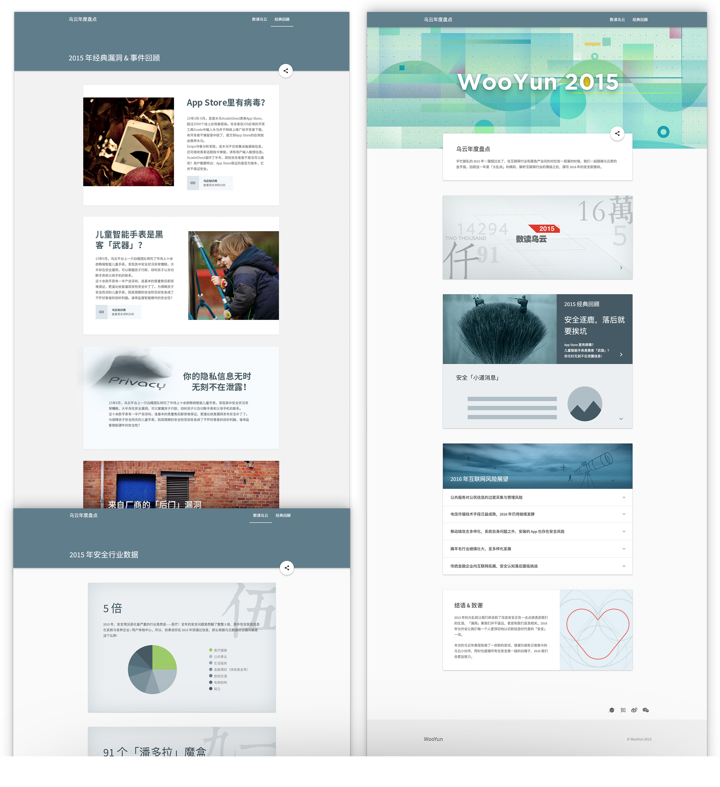
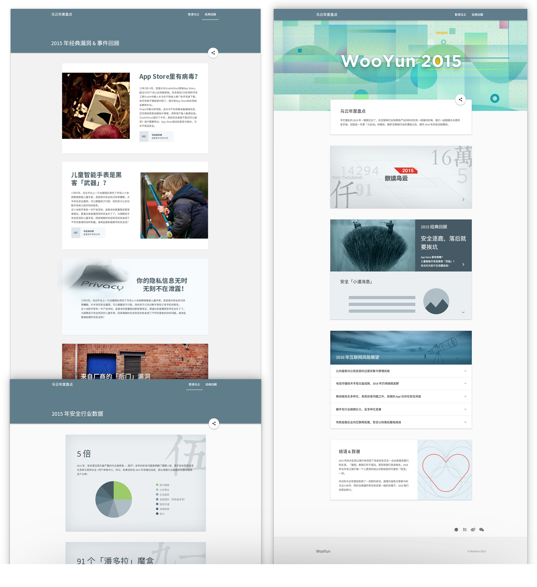

Web Design for WooYun Report 2015
2015.12 – 2016.1 Interaction Design | UI Design | Illustration Design
I was the interaction and UI designer to manage this project, brainstorming with editors, organizing the contents, and cooperating with the front end engineer and the back end engineer to ensure to put out with a gorgeous, mobile-friendly and stable website. As always, I drew some delighted illustrations here.
Project Description
WooYun Report is a site to show what vulnerablities were focused best and what security issues were most influential and dangerous last year. And all data and articles were based on WooYun.org in order to present to all users what we did last year and alert people to prevent the risk from security vuls.
Why did I create a website to present a report?
Traditionally at the end of year, companies would publish some data or achievements in a report as a work summary for the past year. There is no exception in security industry. In the past, WooYun also wrote their report monthly or annually and spreaded it in PDF format.
Thus there were #some problems
- For readers and users: the process of downloading PDF and reading it was hard and slow. The content in PDF sometimes couldn't even present normally. Reading lots of texts /tables or data without proper interaction and communication made readers feel very boring and confused.
- For our team: in order to provide a good preview and download experience for readers, we even had to rely on other company's platform to store and spread the PDF files, where there would be some risks for us.
- For editors who prepare and manage this report: creating PDF report and ensuring its typography quality is too hard to complete. Even though they finally finished those work, editors needed to spend more time, which was totally unworthy. What's more, due to the limit of PDF format，lots of other types of data and contents cannot be shown in the PDF reports, which means editors couldn't express our views and voices enough in a proper way.
Solution
Directly publish the content of traditional "report" on website, and switch those content into more presenting types and provide more ways for readers to interaction with the content.
Main Pages

Mobile Friendly
 


Wow! Time really does fly when you’re having fun.
I’m afraid this case study is just about over. But I've prepared a few more for you so there’s no need to panic (yet).